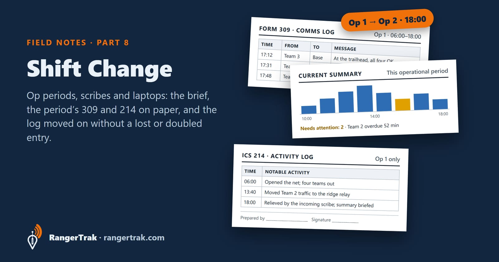
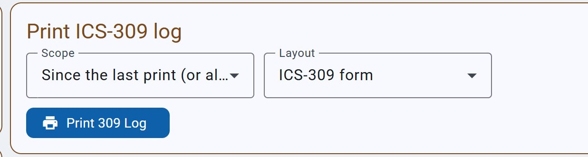

Field Notes · Part 8
Shift Change: Op Periods, Scribes and Laptops

RangerTrak is a free, open-source radio log and map for the scribe at a CERT, ACS/ARES, SAR or wildland-fire command post. Log who, where, when and what off the radio; it maps them. It works offline once set up, and prints the Form 309 Communications Log, ICS-213 and ICS-214. I built it. It’s AGPL and will stay free. Try it at rangertrak.org, no account or install needed.
Most events I’ve scribed end before anyone gets tired. A drill runs four hours, a parade an afternoon. A real search doesn’t care what time it is. Sooner or later the person at the radio table has been there too long, and someone else sits down.
On paper the hand-off is simple, and it works. The outgoing scribe draws a line under the last entry, signs the 309, and talks the new one through it: who’s still out, who hasn’t called in for a while, what the IC is waiting to hear. I’d keep doing every part of that. What the clipboard can’t do is answer the new scribe’s first question at a glance: where does everything stand right now? They find out by reading back through two pages.
Here’s what RangerTrak does at a shift change, in the order I’d do it.
The period, on the Mission page

The Operational period card on the Mission page has a name (“Op 1”, “Night shift”, whatever your IAP calls it), a start and an end. The header at the top of every page shows the period’s name and how long it has run. The same card holds the expected check-in interval from Part 2, the one that turns a quiet team’s elapsed time from green to red. If your night teams check in less often, change it here when the period changes.
When the end time passes, nothing happens to your log. The Mission page’s checklist says the period has expired, in amber, and that’s all. The radio log runs straight across periods. Changing the period never closes, locks or deletes anything, and I’d want it no other way: the radio doesn’t stop at 18:00, so neither should the log. (The Radio Log page does have a button that deletes the log. That’s for after the mission, once it’s backed up. Not for a shift change.)
The brief: Current summary

Current summary, a button on the Radio Log page, is the two-minute brief. It shows how many messages came in each hour, which teams, stations and operators they came from, the entries that still need attention, and your AAR notes grouped by area. Choose this operational period, the whole log, or dates of your own.
It only reads the log. You can run it at the end of a period, halfway through, or because the IC just asked how things are going, and logging carries on underneath. Nothing about it is saved on the device, so Print it: the printout is stamped with the mission, the period it covers and when it was made. One copy for the incoming scribe, one for the IC, one in the box for the after-action review.
The period on paper: the 309 and the map


Print 309 Log on the Radio Log page starts on Since the last print. So the first time, you get everything, and at the end of the next period you get only that period’s traffic, picking up where the last printout stopped. It prints on a form laid out like the Form 309 your EOC or net manager expects, or as a simple list. The form’s From and To come from the operational period, so print before you change the period to the next one.

Print map on the Map page makes a one-page map sheet: every report as a marker with its minutes-since number, the legend, and a title box with the mission, the operational period and the time printed. If you’ve hidden anything on the map, the title box says “Filtered:” so nobody mistakes a thinned-out map for the whole picture.
Staple them together. That’s the period’s record, and it’s the same paper you’d have kept without RangerTrak, just complete and legible.
Log the change itself
A shift change belongs in your ICS-214 activity log, not the radio log: it isn’t a radio call. The AAR/214 button at the top of every page opens a small box; choose ICS-214 line, type “Relieved by …” and save. The time starts as now and can be changed if you’re writing it down late.

And since a 214 covers one operational period, RangerTrak will fill yours in. On the AAR notes page, Export ICS-214 asks whether you want every line or Only this operational period, then fills in FEMA’s own ICS-214 form, offline, ready to print and sign. Hand it in with the 309. Part 9 has more on the 214 and the after-action review.
Then rename the period, set its start and end, and the new scribe is logging.
When the laptop changes too
Often the scribe changes and the laptop doesn’t. Then there’s nothing to move. When the laptop changes too, there are two cases, and RangerTrak treats them differently on purpose.
The next laptop is blank. On the Mission page, Back up mission saves one file with the settings, the roster, the places, your AAR notes and 214 lines, and every report. On the new laptop, Restore mission shows you what’s in the file, with Cancel in focus, before it replaces anything. Restored the wrong file? Undo last import (Mission → Data safety) puts things back for 24 hours.

The next laptop already has entries of its own. A second scribe at another radio, or the next shift’s laptop that logged a few calls while it was being set up. Restore would wipe those. Instead, on the Radio Log page, Hand over to another scribe saves one file with the people, the places and every entry, and Merge in on the other laptop shows what it would add or change, then adds it. Nothing there is replaced or removed. A correction you made to an entry before handing over comes across. Merging the same file twice, or handing it back and forth all night, never makes duplicates. A walk-up volunteer typed in on both laptops becomes one person with their entries attached.
Both files hold names and phone numbers. Each has a passphrase box: fill it in and the file is locked; leave it blank and it isn’t. A forgotten passphrase can’t be recovered, so write it where the scribes will find it and nobody else will. Put the file on a USB stick, not in someone’s personal email.
What it doesn’t do
Two laptops don’t keep each other up to date as you type. Each one is its own log until someone hands a file across. That’s deliberate: there’s no server in the middle and no account, which is why it works with no Internet at all. The cost is that a merge happens when a person decides to do it, not by itself. If you run two scribes at once, pick a time to swap files, the way you’d pick a time to compare paper logs.
Entries that come across in a merge are numbered on from this laptop’s last entry and marked 📦, so you can always tell which ones were merged in. That means an entry’s number on the other laptop and on this one won’t match. If your 309 goes to a net manager who counts message numbers, tell them.
And keep the paper. The printed summary, 309 and map sheet are the hand-off that survives a dead battery.
Try it in ten minutes
- Open rangertrak.org in a spare browser profile, so nothing of yours is replaced, and use Load a demo on the Entry page.
- On the Radio Log, press Current summary, choose this operational period, and look at the print preview.
- Print the 309 to PDF. Log two new entries, then print again: the second printout should hold just those two.
- On the Mission page, rename the period and set a new start and end. Watch the header.
- Open a second browser profile, type a couple of entries of your own, and use Merge in with a hand-over file from the first. Then merge it again and check that nothing doubled.
Rather be led through it? Module 5 of the RangerTrak Tour Guide, Run the net, walks you through it hands-on. New to RangerTrak? Start the tour.
Tell me
- How does your group hand over the scribe position today? A written brief, a talk-through, the 309 itself?
- How long do your operational periods really run, and does the scribe change with them or more often?
- Have you ever had two scribes logging at once? How did the two logs become one afterwards?
Use the feedback form (start with “Blog 8”), Help → feedback inside the app, or email RangerTrak [at] steadyeoc [dot] com.
The series
- The Paper Log, Without the Paper
- Hot, Warm, Cold
- However They Read It Out: coordinates and maps
- From Radio Log to Form 309 and ICS-213
- More Than One Laptop: field phones, report handoff, a live view for the IC
- What’s Missing, and Who Decides
- Your Roster Is Already in a Spreadsheet
- Shift Change: Op Periods, Scribes and Laptops (this post)
- After the Mission: Summaries, AAR and the Final Report
- Field Phones, Up Close
- RangerView
- People, Teams and Places: help me get this right
Next: the beta. RangerTrak is in beta: everything that’s changed since the alpha, and a call for testers. Then Part 9, After the Mission: the debrief, the ICS-214 and the final report.